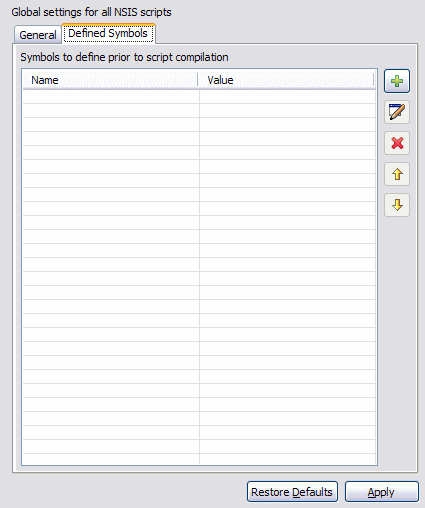

Preferences
EclipseNSIS
These preferences are used to
set global settings for NSIS scripts,
including
command
line options for the MakeNSIS compiler. These options are applied
during script compilation, unless overridden on the script level (see
the Properties
section).
The EclipseNSIS Preferences page has two tabs:
General

- NSIS Home
- Location of NSIS software installation. This is the folder where MakeNSIS.exe can be found. In case there are multiple NSIS installations, e.g. in a development environment, the drop-down combo remembers the locations you specified, so that they are available for quick NSIS home selection. ← Back
- Automatically open NSIS console
- Automatically open the EclipseNSIS console when compiling a script. If the console is already open, it is brought to the front. ← Back
- Use Eclipse Platform help browser
- Use the Eclipse Platform help browser to display NSIS help. If this option is unchecked, then the EclipseNSIS integrated help browser is used. ← Back
- Notify when MakeNSIS.exe has been modified or deleted
- EclipseNSIS monitors the status of the MakeNSIS.exe executable in the chosen NSIS home. If this executable
is modified, EclipseNSIS needs to reconfigure itself. If EclipseNSIS cannot find a valid MakeNSIS.exe in the current configured NSIS home, it attempts to find an
alternate NSIS home by iterating through all previously used NSIS homes in order of last use until it finds
a valid NSIS home.
If this option is checked, EclipseNSIS issues visual notifications in the form of a message box alert and a progress dialog, otherwise it is done silently, and a notification is only issued if an alternate NSIS home cannot be found. ←Back
- Print NSIS header info
- Prints out information on what options were used to compile MakeNSIS was compiled with. Equivalent to the /HDRINFO compiler option. ← Back
- Print NSIS license
- Displays a keen license page. Equivalent to the /LICENSE compiler option. ← Back
- Do not include default NSIS config
- Disables inclusion of ${NSISDIR}\nsisconf.nsh. Without this parameter, installer defaults are set from nsisconf.nsh.. Equivalent to the /NOCONFIG compiler option. ← Back
- Don't change directory
- Disables the current directory change to that of the .nsi file. Equivalent to the /NOCD compiler option. ← Back
- Verbosity
- Sets the verbosity of the compiler output. Equivalent to the /V compiler option. ← Back
- Compressor
- Sets the default compressor for NSIS scripts. This overrides any compressor settings in the script. When the Best compressor option is selected, all compressors are tried, and the one with the best compression is used for creating the installer. The "Solid" checkbox appears if the specified version of MakeNSIS.exe supports the SetCompressor /SOLID option. The Solid checkbox is enabled only if a compressor is selected explicitly. ← Back
- Instructions
- Instructions for the MakeNSIS compiler to execute prior to compiling the script. Equivalent to the /X compiler option. The following buttons allow the manipulation and configuration of instructions. ← Back
- Add
- Add a new instruction. ← Back
- Edit
- Edit the selected instruction. ← Back
- Delete
- Delete the selected instruction(s). ← Back
- Up
- Move the selected instruction(s) up in the execution sequence. ← Back
- Down
- Move the selected instruction(s) down in the execution sequence. ← Back
Defined Symbols

- Defined Symbols
- Symbols to be defined by the MakeNSIS compiler prior to compiling the script. Equivalent to the /D compiler option. The following buttons allow the manipulation and configuration of symbol definitions. ← Back
- Add a new symbol. ← Back
- Edit
- Edit the selected symbol. ← Back
- Delete
- Delete the selected symbol(s). ← Back
- Up
- Move the selected symbol(s) up in the define sequence. ← Back
- Down
- Move the selected symbol(s) down in the define sequence. ← Back
Previous | Contents | Next
Copyright © 2004, 2005 Sunil Kamath (IcemanK).